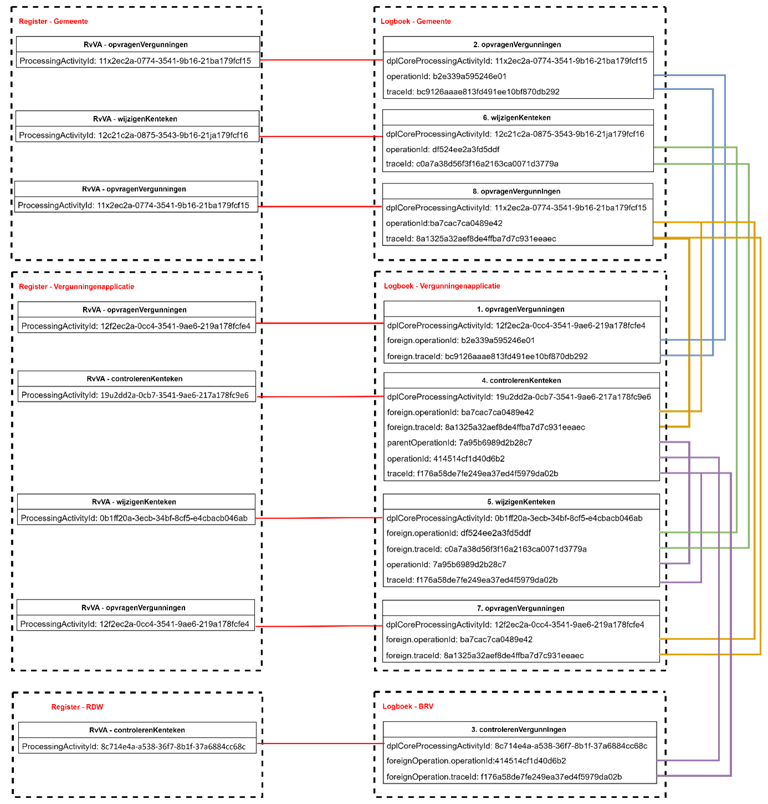

De overheid wil voor burgers en bedrijven zo transparant mogelijk zijn in de omgang met hun gegevens. Daarom is het bij de informatieverwerking in datasets belangrijk om voor elke mutatie of raadpleging vast te leggen wie deze actie wanneer uitvoert, en waarom. Deze herleidbaarheid speelt zowel een rol in het kader van de wetgeving op het gebied van privacy als ook het streven naar openheid en transparantie bij de overheid. Voor een optimale samenwerking over organisaties en bronnen heen is voor deze logging een algemene standaard nodig.
Het project Logboek Dataverwerkingen (voorheen: Verwerkingenlogging) maakt deel uit van het actieplan Data bij de Bron en onderzoekt met Digilab in samenwerking met diverse overheidspartijen (ministeries, uitvoeringsorganisaties en gemeentes) of we op basis van de tot nu toe opgedane inzichten een overheidsbrede standaard kunnen vaststellen. Na het succesvol beproeven van de standaard wordt deze voorgesteld voor opname in de ‘Pas toe of leg uit’-lijst van het Forum voor Standaardisatie.
De Logboek Dataverwerkingen standaard bestaat uit de volgende drie documenten:
de Normatieve standaard
de informatieve inleiding, scope en context
het Juridische Beleidskader
Status van dit document
Dit is een werkversie die op elk moment kan worden gewijzigd, verwijderd of vervangen door andere documenten. Het is geen door het TO goedgekeurde consultatieversie.
1. Inleiding
Het idee is dat het Logboek Dataverwerkingen een basis biedt om te zorgen dat de overheid precies de gegevens logt die zij nodig heeft om verantwoording af te leggen over haar taken. Niet meer, maar ook niet minder. En om te zorgen dat organisaties gegevens zodanig loggen dat zij zich niet alleen over een eigen handelen kunnen verantwoorden, maar ook over hun gezamenlijk handelen als “de overheid”.
@@@ todo, nog aanvullen
2. Tot Stand koming van de standaard
2.1 initiatief van de VNG
@@@ todo
2.2 Doorontwikkeling door BZK in het kader van Digilab
Een persoon heeft bij een gemeente een parkeervergunning in gebruik en wil de gegevens van deze vergunning bekijken.
3.1.2 Uitgangspunten
Het beschreven proces is een voorbeeld, het werkelijke proces kan anders verlopen.
Het proces is een ‘happy flow’ dit betekent dat validaties en eventuele foutsituaties in dit voorbeeld niet in ogenschouw worden genomen.
Autorisatieprocessen zijn in dit voorbeeld niet meegenomen.
Een Loggingsregel wordt toegevoegd aan het logboek per geheel afgeronde transactie. Er wordt dus geen aparte logregel aangemaakt per ontvangen of verstuurd bericht.
Een aantal gegevens staan nog ter discussie (vanuit juridisch oogpunt). Voor de volledigheid worden een aantal gegevens in dit voorbeeld meegenomen. Het betreft de gegevens:
o resource/name/version
o receiver
o dataSubject
3.1.3 Globaal proces
Een persoon vraagt in zijn ‘MijnOmgeving’ van de gemeente om de bestaande parkeervergunninggegevens.
De ‘MijnOmgeving’ van de gemeente verzoekt de parkeervergunningapplicatie om de actuele parkeervergunninggegevens van de persoon.
Het parkeervergunningsysteem voert dit verzoek uit. Daarna verzendt de parkeervergunningapplicatie de gevraagde gegevens naar de gemeente. Het parkeervergunningensysteem logt dat er gegevens verzonden zijn naar de gemeente.
De gemeente toont de gegevens aan de persoon en logt dat deze gegevens zijn getoond aan de persoon.
Schematisch ziet dit proces er als volgt uit:
3.1.4 Logging van gegevens
De volgende gegevens worden gelogd in de diverse logmomenten:
Om uiteindelijk alle gegevens te kunnen rapporteren, is het van belang dat gegevens op een bepaalde manier aan elkaar gekoppeld zijn. In dit voorbeeld zijn de gegevens op de volgende manier gekoppeld:

3.1.6 Relatie met de standaard Logboek Dataverwerkingen
De relatie met de doelstellingen die gesteld zijn in de standaard Logboek dataverwerkingen worden, op basis van dit voorbeeld, als volgt concreet gerealiseerd:
- het wegschrijven van logs van dataverwerkingen: In dit voorbeeld is het de betrokkene zelf die via een portaal zijn eigen gegevens kan bekijken en wijzigen. Deze acties zijn gegevensverwerkingen en worden gelogd bij zowel de gemeenteapplicatie (gegevens worden getoond aan de betrokkene) als bij de vergunningenapplicatie (verstrekking specifieke informatie aan de gemeenteapplicatie).
- het aan elkaar relateren van logs van dataverwerkingen: Er zijn in dit voorbeeld twee applicaties nodig om het totaal aan gevraagde informatie te kunnen tonen aan de betrokkene. Beide applicaties hebben een logboek voor verwerkte gegevens. Om een totaalbeeld van de gelogde gegevens te kunnen construeren, is een relatie tussen de logs nodig. In dit voorbeeld wordt de koppeling gelegd door het operationId en traceId (gemeentelogboek) te linken aan het foreignOperationId en foreignTraceId (vergunningenlogboek).
- het aan elkaar relateren van dataverwerkingen over de grenzen van systemen: Naast het koppelen van logs van diverse applicaties, wordt ook een koppeling gelegd met het Register van verwerkingsactiviteiten. Dit gebeurt per applicatie op basis van het ProcessingActivityId (register) te koppelen aan dplCoreProcessingActivityId (logboek). De diverse registers hebben geen directe koppeling met elkaar.
1.De applicatie MOET een Trace starten voor iedere Dataverwerking waarvan nog geen Trace bekend is. Bij elke start van een verwerking wordt een traceId aangemaakt. Bijvoorbeeld: in het voorbeeld komt er een bericht binnen bij de ‘MijnOmgeving’ van de gemeente (opvragenVergunningenVraag). Er wordt direct een traceId aangemaakt.
2.De applicatie MOET voor iedere Dataverwerking een logregel wegschrijven in een Logboek. Log Sampling is niet toegestaan. Een dataverwerking wordt opgeslagen als deze volledig is afgerond. In het voorbeeld is te zien dat een logregel wordt geschreven op het moment dat de vraag- en het antwoordbericht zijn afgerond.
3.De applicatie MOET bijhouden of een Dataverwerking geslaagd of mislukt is en dit per Dataverwerking als status meegeven aan het Logboek. Bij elke logregel in het voorbeeld staat de statusCode vermeld (‘OK’).
4.Als een Dataverwerking meerdere Betrokkenen heeft dan MOET de applicatie voor iedere betrokkene een aparte logregel wegschrijven. Een logregel kan naar 0 of 1 betrokkenen verwijzen. In het voorbeeld gaat het om één betrokkene (dplCoreDataSubjectId), er wordt steeds één logregel aangemaakt.
5.Als een applicatie aangeroepen kan worden vanuit een andere applicatie MOET de applicatie Trace Context metadata accepteren bij een dergelijke aanroepen deze metadata kunnen omzetten naar een foreign_operation bericht. Bij een externe verwerking (bijvoorbeeld opvragenVergunningen) geeft de ‘MijnOmgeving’ de traceId en OperationId mee aan de Vergunningenapplicatie. De vergunningenapplicatie registreert de traceId en operationId beide als ‘foreignOperation’.
4. Besluitenlijst
Deze sectie is tijdelijk en niet normatief, bedoeld om informatie te geven over achterliggende afwegingen bij de standaard.
In de definitieve standaard wordt deze lijst niet opgenomen, omdat veel afwegingen specifiek zijn voor de context van de Nederlandse overheid waarin deze standaard is ontstaan. De standaard is breder inzetbaar, en voor de implementatie is het niet relevant om de afwegingen bij alle aspecten van de standaard in de context van de Nederlandse overheid te kennen.
4.1 Logregels bevatten alleen wat nodig is voor verantwoording door verantwoordelijke
Dit onderdeel is niet normatief.
Status: draft
Datum: 2024-06-24
4.1.1 Context en probleemstelling
Vanuit de wens om zoveel mogelijk context vast te leggen om zo een compleet beeld te schetsen van wat er is gebeurd rond een Dataverwerking kan de neiging ontstaan om informatie uit andere organisaties vast te leggen in de logregels.
Hierdoor kom je al snel in lastig vaarwater, juridisch gezien. Er worden dan zaken vastgelegd die niet noodzakelijk zijn voor het verantwoorden van het handelen. Bovendien is het mogelijk om een compleet beeld te krijgen door de informatie te laten in de organisatie waar een dataverwerking is uitgevoerd. Dit is dan ook beter om te doen, vanuit het oogpunt van dataminimalisatie.
Voor de uitoefening van het Inzagerecht is de consequentie dat de Betrokkene informatie uit alle organisaties moet ophalen en deze volgens een paar relatief eenvoudige businessrules aan elkaar moet relateren voor het verkrijgen van een compleet beeld. Dit kan door alle organisaties te bevragen, of door gericht bij één organisatie te beginnen en vervolgens de URI's te volgen naar logrecords in andere organisaties.
Het kan zijn dat organisatie A de logs wel op orde heeft, en organisatie B (nog) niet. Dan is het resultaat dat geen compleet beeld kan worden gegeven. Daarmee komt de prikkel tot verbetering op de juiste plek, namelijk bij de organisatie die het Logboek nog niet op orde heeft.
4.1.2 Besluit
Logregels bevatten alleen wat nodig is voor verantwoording door de Verantwoordelijke.
4.1.3 Gevolgen
In logregels wordt alleen een identifier vastgelegd van gerelateerde Dataverwerkingen in een andere context (bijv. een andere organisatie), geen inhoudelijke informatie
Voor een analyse, bijvoorbeeld in het kader van een audit of uitoefening inzagerecht, is het nodig om op dat moment de URI's naar logs in andere organisaties te volgen
4.2 Logregels bevatten geen gegevens die al vastliggen in een Register
Dit onderdeel is niet normatief.
Status: proposed
Datum: 2024-02-01
4.2.1 Context en probleemstelling
Om te optimaliseren voor de het lezen en begrijpen van de logs is het denkbaar om de benodigde informatie redundant weg te schrijven in elk logrecord, zodat er geen afhankelijkheid bestaat van andere bronnen.
Dit heeft nadelen, zoals:
Wanneer de statische gegevens (zoals bewaartermijn, verantwoordelijke, etc.) wijzigen, zou dit moeten worden aangepast in alle logrecords. Dat verhoudt zich slecht tot het 'inmutable' zijn van deze logrecords.
De grote vrijheid in alle clients om invulling te geven aan deze gegevens leidt er vrijwel zeker toe dat verdere divergentie optreedt. Dit heeft o.a. tot gevolg dat het lastig wordt om te rapporteren uit de logs
De API voor het wegschrijven van logs wordt ingewikkeld en relatief traag voor het wegschrijven van records
In de gewenste situatie:
staan alle statische gegevens in het Register van de Verwerkingsactiviteiten (RvVA), en bevatten logrecords verwijzigen naar dat Register. Specifiek gaat dit om de resources 'verwerkingsactiviteiten' en 'organisaties'.
kan bij het configureren van clients in de RvVA-API worden opgezocht welke organisaties en verwerkingsactiviten van toepassing zijn
kunnen wijzigingen in verwerkingsactiviteiten worden doorgevoerd zonder dat logrecords gewijzigd behoeven te worden
Met name het wegschrijven van logs kan op deze manier met hogere performance worden uitgevoerd. Dit kan nog verder worden geoptimaliseerd door niet te vereisen dat dit middels REST API calls gebeurt, maar een interface te definiëren die kan worden geïmplementeert met bijvoorbeeld gRPC of andere streaming protocollen.
Wanneer het aan de gebruiker is om in de software die de Logboek API aanroept de namen van acties, de vetrouwelijkheid en de bewaartermijn te bepalen, zal de invulling daarvan op allerlei manieren uiteen gaan lopen. Door dit in het RvVA te bepalen zal eerder uniformering plaatsvinden. De vulling van RvVA's kan waarschijnlijk zelfs in hoge mate gestandaardiseerd worden.
Met meer gestandaardiseerde namen en bewaartermijnenen en een eenduidige omgang met vertrouwelijkheid is het ook eenvoudiger om eenduidige te communiceren naar de Betrokkene. Bijvoorbeeld: een portaal dat aan de Betrokkene toont hoe de persoonsgegevens zijn verwerkt, is lastig vorm te geven wanneer in de praktijk blijkt dat software-leveranciers verschillende interpretaties hebben van het niveau waarbij sprake is van een verwerking, handeling of actie. Eenduidige interpretatie is cruciaal, en dit kan waarschijnlijk alleen in het RvVA.
Overigens werkt het conceptueel wél wanneer men geen API op het RvVA aanbiedt, deze link kan ook handmatig worden gelegd iedere keer als deze informatie nodig is, en het RvVA bijvoorbeeld alleen bestaat als Excel document.
4.2.2 Besluit
Logregels bevatten geen informatie over Verwerkingsactiviteiten en Verantwoordelijkheden die al vastliggen in een Register
4.2.3 Gevolgen
In de standaard Logboek Dataverwerkingen is het nodig om ook de benodigde interface op de RvVA te standaardiseren. Dit is nodig om de logs geautomatiseerd en realtime te kunnen interpreteren: zonder gestandaardiseerde manier om informatie over verwerkingsactiviteiten op te vragen kan men aan logregels niet zien of het verwerkingen, handelingen of acties betreft.
Met de volgende sequentie diagrammen wordt in beeld gebracht wat de gevolgen zijn voor de diverse flows in het gebruik van de standaard.
4.2.3.1 Loggen van een verwerking
Het wegschrijven van een verwerking in de log-API is uiterst simpel:
Deze transactie is geoptimaliseerd op eenvoud en snelheid, want deze heeft rechtstreeks invloed op de snelheid van verwerkingen. Deze transactie moet schaalbaar zijn naar bijv. tienduizenden transacties per seconde.
4.2.3.2 Tonen van een verwerking
Voor het op betekenisvolle manier tonen van verwerkingen aan bijvoorbeeld een Betrokkene is het dan nodig om gegevens op te vragen uit zowel de logs als het RvVA. Deze flow mag wat complexer zijn, omdat deze niet voor alle vastgelegde data wordt uitgevoerd en het belang van de bevraging rechtvaardigt dat een bevraging wat langer kan duren.
4.3 Bewaartermijnen worden in het Profiel vastgelegd
Dit onderdeel is niet normatief.
Status: draft
Datum: 2024-05-23
4.3.1 Context en probleemstelling
Logrecords moeten op enig moment worden verwijderd. Wanneer?
Voor vrijwel alle vastgelegde gegevens geldt dat deze op enig moment moeten worden vernietigd of overgebracht naar een archief. Dit geldt ook voor logrecords.
Anders dan bij gegevens over rechtsfeiten zullen logrecords typisch allemaal dezelfde bewaartermijn hebben. Het kan zijn dat de Dataverwerking waar het logrecord betrekking op heeft leidt tot gegevens waarvoor complexe bewaartermijnen gelden (bijvoorbeeld een dynamische termijn die duurt totdat Betrokkene is overleden gevolgd door een statische termijn van enkele tientallen jaren). De logrecords die de Dataverwerking beschrijven kennen deze complexe bewaartermijn niet, deze kunnen statisch zijn en generiek worden vastgesteld per organisatie of eventueel per verwerkingsactiviteit. Het is aan de organisatie zelf om daarin keuzes te maken.
Voor samenwerkende organisaties die zich ten doel stellen om gezamenlijk op eenduidige manier te verantwoorden over dataverwerkingen kan het nuttig zijn afspraken voer bewaartermijnen vast te leggen in een Profiel.
4.3.2 Besluit
Bewaartermijnen worden in het Profiel vastgelegd.
4.3.3 Gevolgen
In de Logregel liggen geen gegevens vast over bewaartermijnen.
Vanuit een beheercomponent kunnen Logregels worden verwijderd door te kijken naar de datum van de Logregel in relatie tot de bewaartermijn die de organisatie hanteert voor Logregels. Deze bewaartermijn kan gezamenlijk zijn afgesproken en ligt dan vast in het Profiel.
4.4 Geen gegevens over gebruikers in logregels
Dit onderdeel is niet normatief.
Status: draft
Datum: 2024-05-23
4.4.1 Context en probleemstelling
Om te verantwoorden dat een dataverwerking correct is uitgevoerd is het nodig te weten wie de dataverwerking heeft geïnitieerd, zodat kan worden nagegaan dat dit met de juiste autorisatie is gedaan.
De wens zou kunnen bestaan om in elke logregel vast te leggen welke gebruiker een rol heeft gehad bij de betreffende Dataverwerking.
Echter, de vastlegging van een handeling van een gebruiker als medewerker van een organisatie betreft ook een Dataverwerking die onder de AVG valt, waardoor rechten ontstaan voor de betreffende gebruiker om Inzage te verkrijgen. De vastlegging van de betrokkenheid van de gebruiker is een Dataverwerking op zich. Door een dergelijke vastlegging in de logregels te doen ontstaat een ongewenste recursiviteit.
Ook is de relatie van de gebruiker tot de Dataverwerking niet eenvoudig eenduidig te modelleren, o.a. omdat bij een enkele Dataverwerking meerdere gebruikers in meerdere rollen betrokken kunnen zijn.
Daarnaast kan het goed zijn dat de Dataverwerking in het Audit Log onder een andere Verantwoordelijke valt dan de Dataverwerking die op dat moment door de gebruiker wordt uitgevoerd. Bijvoorbeeld:
Een Dataverwerking wordt door een gebruiker bij een Verwerker uitgevoerd
De Dataverwerking valt onder verantwoordelijkheid van de Verantwoordelijke, namelijk de organisatie die de Verwerker heeft ingehuurd
De Audit Log is een aparte Dataverwerking die valt onder verantwoordelijkheid van de Verwerker, in de rol van Verantwoordelijke over de eigen bedrijfsvoering.
Het is daarom zuiverder om een andere oplossing te kiezen, namelijk:
Betrokkenheid van gebruiker wordt vastgelegd in een Audit Log (buiten scope van deze standaard)
In het Audit Log kan eventueel een relatie worden gelegd met het Processing ID dat ook in het Logboek Dataverwerkingen wordt gebruikt
Iedere keer dat in het Audit Log gegevens over een gebruiker worden vastgelegd, moet tevens een Dataverwerking worden gelogd in het Logboek Dataverwerkingen.
Let wel, deze Dataverwerking is een andere Dataverwerking dan de Dataverwerking die op dat moment wordt uitgevoerd door de Gebruiker, heeft een eigen Trace Context, en wordt gerelateerd aan een andere Verwerkingsactiviteit.
4.4.2 Besluit
In logregels worden geen identificerende gegevens over gebruikers van de Applicaties vastgelegd.
4.4.3 Gevolgen
In gevallen dat het nodig is te achterhalen welke gebruiker een specifieke Dataverwerking heeft uitgevoerd, moet dit worden achterhaald door de Dataverwerking te koppelen aan het Audit Log (buiten scope van de standaard)
Het koppelen van Dataverwerking aan Audit Log is mogelijk door in Audit Logs hetzelfde Processing ID op te nemen als in de logregel die in het Logboek Dataverwerkingen wordt opgenomen.
4.5 Standaard beschrijft geen interface voor verwijderen van logs
Dit onderdeel is niet normatief.
Status: draft
Datum: 2024-05-24
4.5.1 Context en probleemstelling
Logrecords moeten op enig moment worden vernietigd. Moet er een interface in de standaard worden gedefinieerd voor het verwijderen van vastgelegde logrecords?
De wijze waarop logrecords worden weggeschreven is sterk afhankelijk van de keuzes die een organisatie maakt bij de implementatie van de standaard.
Interoperabiliteit is daarbij niet relevant, omdat het wijzigen of verwijderen van logrecords niet gebeurt vanuit de applicatie die oorspronkelijk de dataverwerking uitvoerde en het wegschrijven van het logrecord veroorzaakte. Wijzigen en verwijderen gebeurt vanuit een beheercomponent. Deze zijn vaak hard gekoppeld aan de voor logging gekozen oplossing, waardoor het voorschrijven van een interface tot onnodige complexiteit leidt.
4.5.2 Besluit
De standaard beschrijft geen interface voor het wijzigen of verwijderen van logrecords
4.5.3 Gevolgen
Iedere organisatie kan een bij de eigen implementatie passende oplossing kiezen voor het verwijderen van logrecords
Het wijzigen van logrecords is in principe ongewenst maar kan op soortgelijke manier opgelost worden
4.6 Vertrouwelijkheid wordt vastgelegd per Verwerkingsactiviteit
Dit onderdeel is niet normatief.
Status: draft
Datum: 2024-05-23
4.6.1 Context en probleemstelling
Alle verwerkingen worden gelogd. Een deel van deze verwerkingen mag (moet!) bekend worden bij Betrokkenen, een deel niet. Hoe moet dit onderscheid geïmplementeerd worden?
Voorbeeld:
Voorbeeld:
Opsporingsinstantie A bevraagt bij Overheidsorgaan B gegevens op over Betrokkene X in het kader van opsporingsactiviteiten rond een misdrijf
Betrokkene krijgt geen inzage in / wordt niet geïnformeerd over de verwerking van Opsporingsinstantie A, dit zou het onderzoek hinderen
Als Betrokkene wel inzage krijgt / wordt geïnformeerd over de verwerking van Overheidsorgaan B, zou Betrokkene alsnog zien dat Opsporingsinstantie A deze gegevens heeft opgevraagd, met hetzelfde ongewenste effect.
Er zijn meerdere oplossingsrichtingen denkbaar. Wat is de gewenste oplossingsrichting, hoe wordt deze gespecificeerd?
Mogelijke oplossingsrichtingen:
Ken aan iedere Dataverwerking een status toe waarmee de vertrouwelijkheid wordt aangeduid, en geef deze status mee in de verwerking zodat alle betrokken organisaties dit in de logs kunnen verwerken
Leg vertrouwelijkheid meer categorisch vast op het niveau van Verwerkingsactiviteiten (in het Register)
Overwegingen:
Vertrouwelijke verwerkingen moeten meer strikt gescheiden moeten worden van niet-vertrouwelijke verwerkingen. Wanneer een bevraging zowel vertrouwelijk als niet-vetrouwelijk kan zijn (voorbeeld: het opvragen van eigenaargegevens van een voertuig) moeten twee gescheiden processen bestaan, waarbij de vertrouwelijke variant niet alleen apart wordt gelogd, maar in het geheel aan meer strikte regels wordt onderworpen, zoals eisen aan betrokken beheerders, classificatie van gegevens, etc.
Pogingen om het geschetste probleem op te lossen door op logrecord-niveau vast te leggen of een verwerking vertrouwelijk is leiden tot veel complexiteit en uitzonderingsgevallen in de implemenentatie van de standaard. Een aantal voorbeelden van ongewenste complexiteit:
Vertrouwelijkheid vastleggen per logrecord betekent dat deze vertrouwelijkheid ook moet kunnen worden opgeheven
Logrecords zijn dan niet langer 'immutable' tenzij ingewikkelde constructies worden gekozen waarbij een logrecord logisch wordt vervangen door een nieuw record toe te voegen
Er zou een interface gedefinieerd moeten worden voor het wijzigen van de status 'vertrouwelijkheid'
Vertrouwelijkheid van een handeling aan het einde van een proces zou gevolgen kunnen hebben voor reeds vastgelegde logrecords
Bovendien geldt dat Overheidsorganisatie B op impliciete wijze zou leren dat Betrokkene X onderwerp is van een opsporingsonderzoek, terwijl dit beter op expliciete wijze geregeld kan worden. Door het expliciet te regelen kan Overheidsorganisatie B alle benodigde maatregelen nemen om te zorgen dat de vertrouwelijkheid ook in die organisatie geborgd is.
4.6.2 Besluit
Vertrouwelijkheid wordt vastgelegd per Verwerkingsactiviteit
4.6.3 Gevolgen
Vertrouwelijkheid wordt niet vastgelegd in logrecords
Vertrouwelijkheid wordt per logrecord afgeleid uit wat over vertrouwelijkheid is vastgelegd bij de bijbehorende Verwerkingsactiviteit
Vertrouwelijkheid wordt NIET uitgewisseld tussen organisaties
Wanneer een verwerking niet langer vertrouwelijk is, bijvoorbeeld na verjaring, dan volgt dit uit gegevens die vastliggen in het Register (bijvoorbeeld status vertrouwelijkheid, duur vertrouwelijkheid) en wat vastligt in een logrecord (verwerkingsactiviteit_id en datum)
Organisaties moeten vooraf borgen dat vertrouwelijke Dataverwerkingen worden uitgevoerd op een manier die verantwoord kan worden, door dit te regelen op het niveau van Verwerkingsactiviteit. Dit kan tot gevolg hebben dat twee aparte processen nodig zijn voor het vertrouwelijk en niet-vertrouwelijk opvragen van gegvens.
4.7 Verwijzingen naar Registers zijn zo los mogelijk
Dit onderdeel is niet normatief.
Status: proposed
Datum: 2024-05-24
4.7.1 Context en probleemstelling
In de logrecords staat zo min mogelijk inhoudelijke informatie (ADR xxx). Informatie over verwerkingsactiviteiten ligt vast in specifieke registers.
Er kunnen meerdere van deze Registers zijn
Deze kunnen ook van andere organisaties zijn
Naar welk Register wordt verwezen is afhankelijk van het type dataverwerking. Verwerkingen in het kader van de Algemene Verordening Gegevensbescherming (AVG) verwijzen naar een Register van Verwerkingsactiviteiten zoals beschreven in AVG art. 30.
Het Register van Verwerkingsactiviteiten (RvVA) is voor veel organisaties verplicht vanuit AVG art. 30, echter niet voor alle organisaties
Als een Register bestaat, betekent dit niet dat het ook ontsloten wordt met eeen API. In de huidige praktijk bestaat het vaak alleen in een statisch document.
De standaard voor logging moet functioneren gegeven bovenstaande feiten.
4.7.2 Besluit
De link naar de uitwerking van een verwerkingsactiviteit bestaat uit een identifier en daarnaast een URI, URL of URN, in de vorm van key value pairs. Eventuele nadere invulling voor het verwijzen naar specifieke Registers (zoals het RvVA) wordt uitgewerkt in extensies.
4.7.3 Gevolgen
{ Wat zijn de gevolgen na het nemen van dit besluit }
4.8 Log Sampling is niet toegestaan
Dit onderdeel is niet normatief.
Status: proposed
Datum: 2024-06-20
4.8.1 Context en probleemstelling
Een bij logging veelgebruikte techniek is het zogenaamde 'Log Samplen', waarbij bijvoorbeeld slechts 1 op de 10 of 1 op de 100 acties die een log zouden veroorzaken daadwerkelijk worden weggeschreven. Dit wordt gedaan uit overwegingen van performance, opslagruimte en/of kosten. Voor veel toepassingen is het voldoende om uit deze logs trends te destilleren om zo fouten op te sporen of voorstellen voor verbetering te kunnen doen.
Wanneer dit zou worden toegepast bij onderhanden standaard, zou kunnen worden betoogd dat verantwoording nog altijd slaagt, omdat data voor een relevante, gerandomiseerde steekproef beschikbaar is. Echter, gelet op het belang van de verantwoording, en de wettelijke verplichtingen waaraan met de standaard invulling wordt gegeven, is dit onwenselijk voor het Logboek Dataverwerkingen. De Logregels vormen o.a. de basis voor de Informatieplicht en het Inzagerecht uit de AVG. Daarvoor is het nodig om over iedere Dataverwerking metagegevens vast te leggen.
4.8.2 Besluit
Log Sampling is niet toegestaan.
4.8.3 Gevolgen
Iedere logregel wordt weggeschreven in het LogBoek Dataverwerkingen
Wanneer een techniek voor loggen wordt toegepast waarbij Log Sampling is ingericht, moet ervoor worden gewaakt dat dit niet geldt voor de logregels die beschreven worden in deze standaard.